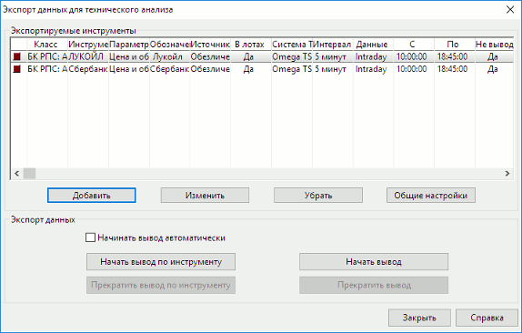
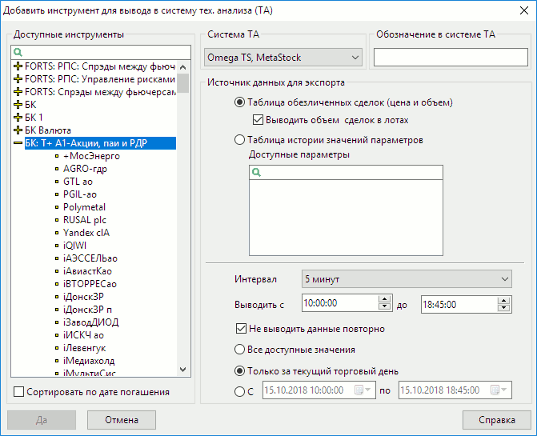
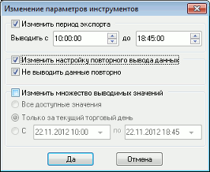
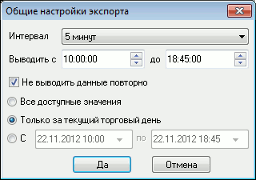

Экспорт данных в системы технического анализа встроенными средствами
меню Сервисы / Экспорт/импорт данных / Экспорт в системы тех. анализа…
Назначение
Использование получаемых системой QUIK данных для оперативного технического анализа в профессиональных
приложениях Equis MetaStock (включая версию 9.0), Wealth-Lab Developer
версий 3.0 и 4.0, Omega TradeStation/ProSuite 2000i и AmiBroker
5.x.
Использование
Функция экспорта данных встроенными средствами возможна, если доступен пункт
меню Сервисы / Экспорт/импорт данных / Экспорт в системы тех. анализа….
Для обеспечения корректной работы пакетов технического анализа требуется
соответствующая настройка этих программ, подробнее см. Настройка программы Equis MetaStock, Настройка программы Wealth-Lab Developer, Настройка программы AmiBroker, Настройка программы Omega TradeStation/ProSuite 2000.
Одновременное использование встроенных средств экспорта и программы
MetaServer RT для вывода данных в MetaStock или TradeStation невозможно,
поскольку в обоих случаях используется одинаковый механизм передачи данных.
Также следует учесть, что инсталляция других систем интернет-трейдинга с
функцией вывода данных для технического анализа может привести к нарушению
экспорта из системы QUIK.
- Откройте окно настройки экспорта с помощью пункта меню Экспорт
данных / Данные для технического анализа....

- Создайте список экспортируемых инструментов и их параметров. Для
добавления инструмента в список нажмите кнопку «Добавить». Откроется диалог
выбора параметров для экспорта.

- В списке «Доступные инструменты» выберите инструмент. По
умолчанию они отсортированы в списке в алфавитном порядке. Для удобства выбора
инструментов с фиксированным сроком обращения установите флажок «Сортировать
по дате погашения».
- В поле «Система тех.анализа» выберите название программы, в которую
осуществляется экспорт.
- В поле «Обозначение в системе ТА» введите название инструмента,
идентичное указанному в настройках источника данных для системы технического
анализа.
- Выберите источник данных для экспорта. Из
Таблицы обезличенных сделок возможен экспорт цены и объема
по каждой сделке. При установленном флажке «Выводить объем сделок в лотах»
данные о количестве инструментов в последней сделке будут соответствовать числу лотов
в сделке, при снятом флажке – количеству единиц инструментов. Из Таблицы истории значений параметров возможен экспорт
большего числа параметров, например «Лучшая цена спроса» или «Лучшая цена
предложения».
- Параметр «Интервал» определяет периодичность формирования
«свечей» графика. Выбором значения «Тиковый» назначается вывод данных по каждой сделке. Для экспорта
данных в Omega TradeStation и Metastock не доступен «Дневной» интервал.
- Параметры «Выводить с … » и «до …» определяют начало и
конец торговой сессии. Регулировкой этих параметров можно исключить сделки
периода открытия и закрытия, цены которых может заметно отличаться от
среднерыночной.
- Если установлен флажок «Не выводить данные повторно», то при разрыве связи
с сервером и последующем восстановлении QUIK не передает заново ранее
экспортированные данные. Если флажок снят, то при каждом восстановлении связи
с сервером QUIK экспортирует все данные с начала торговой сессии. О случаях
применения см. Рекомендации.
- Следующие параметры определяют количество экспортируемых данных:
- «Все доступные значения» - все значения, с учетом исторических данных за
предыдущие дни, если такая возможность поддерживается сервером QUIK брокера;
- «Только за текущий торговый день» - все значения текущей торговой
сессии;
- «С …» и «по …» - значения в интервале указанных дат и времени.
- Настройки параметров пп. 7-10 по умолчанию устанавливаются в
соответствии с общими настройками экспорта данных (кнопка «Общие настройки»
в диалоге экспорта данных для технического анализа).
- Нажатием кнопки «Да» окно выбора параметров инструмента закрывается,
и новый инструмент отображается в списке «Экспортируемые инструменты».
- Для редактирования ранее созданного инструмента нажмите кнопку «Изменить».
- Для редактирования общих параметров экспорта по нескольким инструментам
выделите нужные инструменты в списке и нажмите на кнопку «Изменить». На экране
появится диалог, в котором можно изменить настройки периода экспорта данных,
повторного вывода данных, а также изменить множество выводимых значений.

- Для удаления выбранных инструментов из списка выделите их и нажмите на
кнопку «Убрать».
- Кнопка «Общие настройки» позволяет задать параметры, которые будут выбраны
по умолчанию при добавлении нового инструмента для экспорта. При нажатии на
кнопку на экране появляется диалог следующего вида:
- Параметр «Интервал» определяет периодичность формирования «свечей»
графиков для всех экспортируемых инструментов.

- Параметры «Выводить с … » и «до …» определяют начало и конец торговой
сессии.
- Установленный флажок «Не выводить данные повторно» означает, что при
разрыве связи с сервером и последующем восстановлении QUIK не передает
заново ранее экспортированные данные. Если флажок снят, то при каждом
восстановлении связи с сервером QUIK экспортирует все данные с начала
торговой сессии.
- Параметры, определяющие количество экспортируемых данных (применительно
ко всем содержащимся в списке инструментам):
- «Все доступные значения» - все значения, с учетом исторических данных
за предыдущие дни, если такая возможность поддерживается сервером QUIK
Вашего брокера;
- «Только за текущий торговый день» - все значения текущей торговой
сессии;
- Расписание «С … по …» предназначено для настройки интервала времени,
которому соответствуют экспортируемые параметры. Например, если нужно не
выводить данные о сделках, совершаемых в первую минуту торгов, то можно
установить вывод данных не с самого начала торгов, а с указанного момента
времени.
- При установленном флажке «Начинать вывод автоматически» экспорт данных
начинается одновременно с запуском программы.
- Нажатие кнопки «Начать вывод по инструменту» начинает процедуру экспорта по
выбранному инструменту. Инструменты, по которым осуществляется экспорт,
отличаются в списке символом .
- Нажатие кнопки «Начать вывод» начинает процедуру экспорта данных по всем
инструментам из списка.
- Нажатием кнопки «Прекратить вывод по инструменту» останавливается экспорт
данных по выбранному в списке инструменту, нажатием кнопки «Прекратить вывод»
прекращается вывод данных по всем инструментам в списке.
- При начатом экспорте данных по инструменту невозможно удалить его
из списка или изменить его настройки. Если требуется внести изменения,
сначала остановите вывод данных, а затем редактируйте список экспортируемых
инструментов.
- Нажатием кнопки «Закрыть» окно настройки экспорта закрывается. Если
процесс экспорта начат, он будет осуществляться автоматически в фоновом
режиме.
Рекомендации
- В настройках экспорта данных из QUIK рекомендуется устанавливать флажок
«Не выводить данные повторно». Если связь с сервером была прервана и затем
восстановлена, экспорт данных восстановится автоматически. При этом будут
переданы только вновь поступившие данные.
- Если программа QUIK закрыта пользователем, то экспорт данных прекращается.
При повторном запуске системы экспорт данных начинается с начала торговой
сессии. В этом случае потребуется очистить в Metastock’е данные за текущий
день и начать вывод данных заново, придерживаясь такой последовательности:
- Откройте входящую в поставку MetaStock программу The DownLoader,
- Очистите данные за текущую торговую сессию для инструментов, по которым
производился экспорт. Войдите в меню Tools / Delete /
Data..., поочередно выберите инструмент и удалите нажатием кнопки
«Delete»,
- Введите дату текущей торговой сессии и нажмите кнопку «Ok».
- После этого необходимо обязательно перезапустить Equis DataServer и
Metastock FileServer. Если DataServer не был запущен заново, все предыдущие
данные будут отображены в одном интервале времени («свечке»).
- Начните экспорт данных из QUIK нажатием кнопки «Начать вывод».
См. также Сообщения об ошибках.